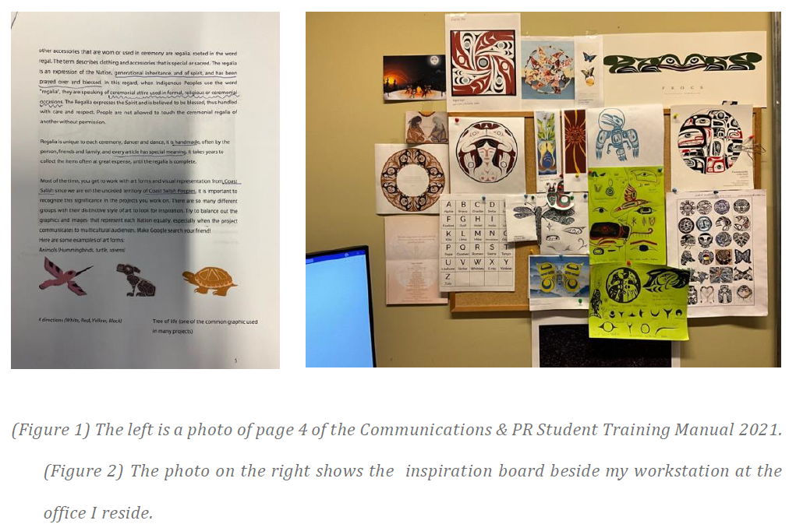

The Mandate
As the Communications and Public Relations Assistant at VACFSS, I was tasked with developing the 2022 Winter Solstice greeting cards—a critical touchpoint for external stakeholder relations and community outreach.
The production pipeline followed a rigorous corporate review cycle, moving from initial concepting through supervisor critique, director-level approval, and final CEO endorsement.
Strategic Purpose
The Winter Solstice represents a significant cultural milestone for Indigenous Peoples. This project served as a gesture of institutional gratitude, designed to acknowledge the vital collaboration of our community partners throughout the year.
I managed the logistical planning and distribution requirements for three separate VACFSS locations, ensuring the messaging reached over 500 recipients, including community partners and caregivers.
Design Methodology
Primary Research & Inspiration
Since joining the organization in 2020, I have curated a digital and physical archive of Indigenous works from the Lower Mainland. This research-heavy approach informs my design decisions, ensuring visual authenticity and cultural care in every illustration.

Conceptualizing through Iteration
My workflow begins with deep-diving into Indigenous mythology and Coast Salish symbolism. I spent the first phase of this project auditing cultural terms and traditional storytelling motifs to ground the design in community history.
From Procreate to Vector-Based Fidelity
While early concepts were explored using digital painting on iPad, I shifted the final production to Adobe Illustrator to ensure infinite scalability and technical precision. Coast Salish formline design relies on clean, intentional geometries—a level of fidelity best achieved through vector-based drafting.
Refinement: Based on stakeholder feedback during the review phase, I adjusted the central motifs to ensure the visual tone felt "welcoming and communal," removing elements that distracted from the core narrative of gathering.
.png)
.png)
.png)
.png)